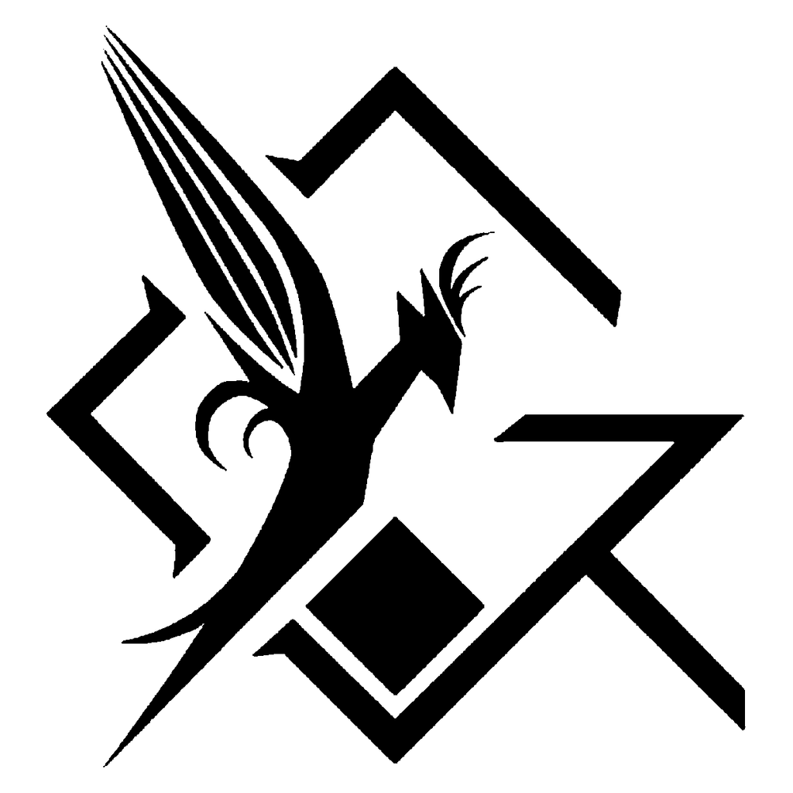

Letters first. Amber brushwork.
Approved assets installed, screenshot refresh completed, and both repositories pushed.
Approved · pushedBird-like Y inside G · tribal ink
The original G and original wing geometry are both restored unchanged. The head is now a clean, compact silhouette with one thin crest and no added eye cutout—no forced facial detail.
Your historical Y–G reference
Isolated from the-yg-logo.jpeg; structure preserved as the generation reference.

Original wing + G · clean head
Original feather channels and wing contours restored. Awkward eye removed. Eight source geometry paths are unchanged; only the small crest is simplified.
Self-contained editable SVG.
White cutouts are transparent, not a background panel.
Focused corrections only: original wing restored, awkward eye cutout removed. The original G, Y body and tail remain unchanged.
Van Gogh-style amber utopian sky
Pronounced spiral vortices, directional impasto strokes, star halos and a small futuristic horizon. Brushwork is graded to the site's actual amber/umber/honey palette, rather than a generic sepia wash.
Approved cover · 48,906 bytes · 960 × 427 · WebP — same artwork, recompressed strictly below 50,000 bytes.
Approve or request precise revisions
The amber cover is approved, wired locally, and recompressed to 48,906 bytes. The published logo and all blog screenshots remain unchanged; screenshot capture still waits for logo approval.